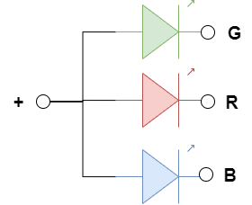

Die DreifarbLED ist ähnlich wie eine ZweifarbLED aufgebaut. Neben der roten und grünen enthält sie aber noch eine blaue LED:

Schließe die DreifarbLED wie folgt an:
void setup() {
pinMode(9, OUTPUT);
pinMode(10, OUTPUT);
pinMode(11, OUTPUT);
digitalWrite(9,HIGH); // Blau aus
digitalWrite(10,HIGH); // Grün aus
digitalWrite(11,HIGH); // Rot aus
}
void loop() {
digitalWrite(9,LOW); // Blau an
delay(500);
digitalWrite(9,HIGH); // Blau aus
digitalWrite(10,LOW); // Grün an
delay(500);
delay(500);
digitalWrite(10,HIGH); // Grün aus
digitalWrite(11,LOW); // Rot an
delay(500);
digitalWrite(11,HIGH); // Rot aus
}
Untersuche, welche Farbe du siehst, wenn zwei oder drei LEDs gleichzeitig eingeschaltet sind.